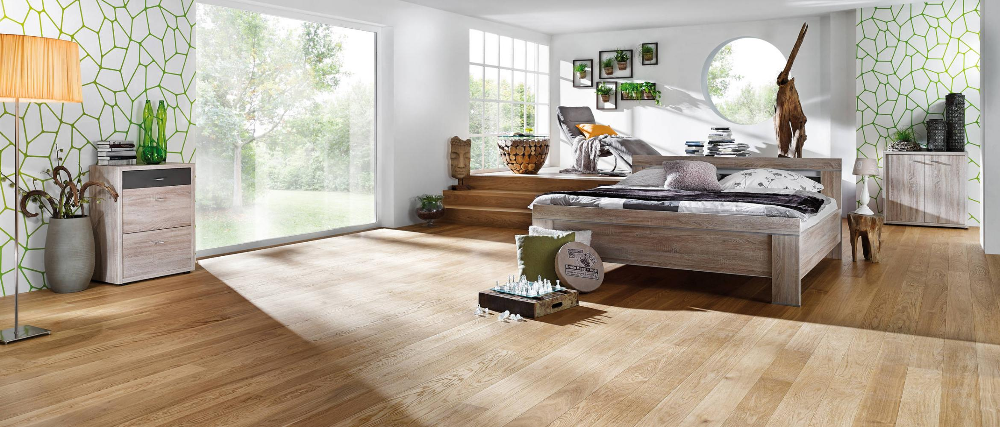

Parkett & Landhausdielen

Parkett gehört nach wie vor zu den beliebtesten Bodenbelägen. Es ist robust, pflegeleicht, langlebig, hygienisch und ist ein natürlicher Werkstoff.
Wir unterscheiden zwischen Mehrschichtparkett (Fertigparkett) und Massivparkett. Mehrschichtparkett hat aufgrund seines dreischichtigen Aufbaus eine hohe Formstabilität und kann daher auch schwimmend (lose), mittlerweile fast ausschließlich im Clic-System, auf einer Trittschallunterlage verlegt werden. Eine vollflächige Verklebung ist in den meisten Fällen auch möglich. Zweischichtparkett wird hingegen ausschließlich vollflächig verklebt. Die Oberflächen sind werksseitig fertig geschliffen und oberflächenbehandelt.
Massives Parkett (z. B. Mosaikparkett, Industrieparkett) wird vollflächig verklebt, anschließend geschliffen und oberflächenbehandelt. Massivholzdielen können auch, je nach Materialstärke, auf einer Holzunterkonstruktion verschraubt werden.
Gerne beraten wir Sie bei der Wahl Ihres Fußbodens. Besuchen Sie uns in unserer Ausstellung oder rufen Sie uns an unter 05207 9563210. Auf Wunsch beraten wir Sie auch gerne vor Ort.